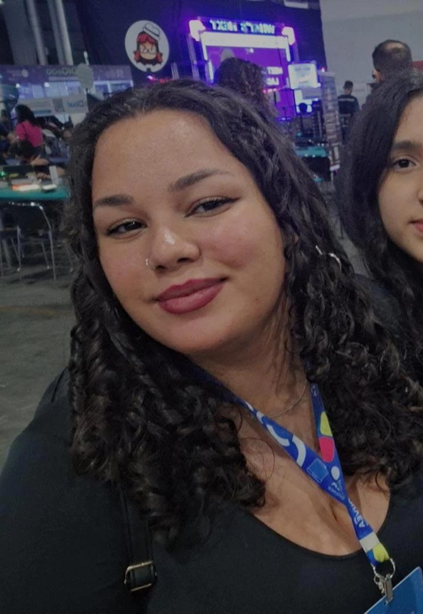

Comunidades

Meninas Digitais
@meninasdigitais

Wo Makers
@who_m
Luciana Santos
@luci_santos
Vídeo Salvo 1
Descrição do vídeo salvo.
Wo Makers
- Salvos
- Salvos
Palestra Mulheres na Tecnologia
Mulheres na Tecnologia é um encontro dinâmico e inclusivo que reúne mulheres apaixonadas pela tecnologia para explorar novas tecnologias, aprimorar suas habilidades técnicas e fazer networking e é transmitido em live no YouTube.

Kauane Martins
- Salvos
- Salvos
Congresso da Sociedade Brasileira de Computação (CSBC)
CSBC 2024, evento que tem como objetivo fomentar o acesso à informação e cultura por meio da informática, promover a inclusão digital, incentivar a pesquisa e o ensino em computação no Brasil e contribuir para a formação do profissional da computação com responsabilidade social. O 44º CSBC tem como tema este ano "Deserto Digital: O Mundo Desconectado e Não Visto” e segue até esta quinta-feira, aqui em Brasília.
Carregando...